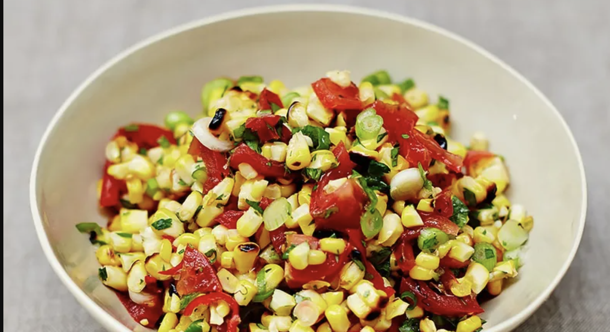

Corn salsa

Sweetcorn is so kid-friendly and this corn salsa is a sure-fire winner with little ones.
Total Time: Prep time: 5 mins | Cook time: 0 mins
Ingredients
- 4 corn on the cob
- ½ a bunch of fresh coriander
- ½ a fresh red chilli
- 4 spring onions
- 4 spring onions
- sea salt
- 2 limes
- 1 tablespoon extra virgin olive oil
Method
- Place a griddle pan on a medium-high heat to warm up.
- . Once hot, carefully add the corn and cook for around 15 minutes, or until hot through and lightly golden all over, turning with tongs regularly for even cooking.
- Remove to a chopping board and leave to cool slightly.
- Hold the charred corn steady on the board using a tea towel to protect your hand, then carefully run a knife down the sides to cut off the kernels, then put the kernels in a mixing bowl.
- Pick and roughly chop the coriander leaves, discarding the stalks, then add them to the bowl.
- Cut the chilli in half lengthways.
- Hold the stalk end of each half steady, then run a teaspoon down the cut sides to scoop out the seeds and white pith.
- Finely slice half the chilli, place in the bowl (save the rest for another recipe), then wash your hands thoroughly.
- Trim and finely slice the spring onions, then add to the bowl.
- Chop up the tomatoes and add them to the bowl with a tiny pinch of salt.
- Cut the limes in half.
- Squeeze all the juice into the bowl, drizzle over the extra virgin olive oil and mix well, then serve.
Tom Haverford
Very quick and easy